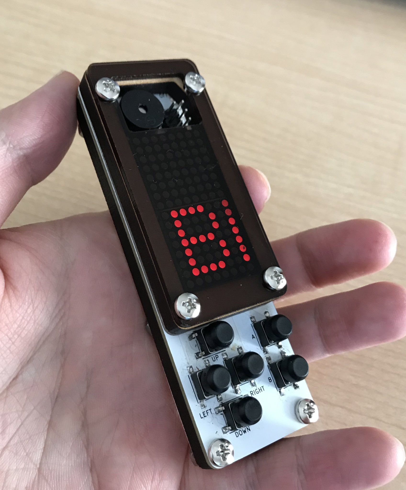

## これはなに?

HACHIBAR(はちばー)は手のひらサイズのモバイルゲーム機です。
Arduinoを基にしているので、Arduinoを使ってオリジナルのゲームを作ることができます。
現在絶賛開発中です。
## スペック
- ディスプレイ: 8×16ドットマトリクスLED
- CPU: ATmega328 (ROM: 32K, SRAM 2K)
- 小型スピーカー
- 十字キー + A,Bボタン
- 電源: CR2032
- USB経由でのプログラム書き換え
## 開発環境
Arduino IDEで開発することができます。
詳しい手順は
HACHIBARでの開発方法を参照してください。
## サンプルプログラム
キーの入力を画面に表示する例です。
HACHIBAR専用のSDKが提供するHachibarオブジェクトを通じてディスプレイへの出力や、キー入力の読み込みができます。
#include "hachibar.h" // include HACHIBAR SDK
#include "hachibar_font.h" // include default font
Hachibar h; // HACHIBAR SDK
int count = 0; // scroll counter
void setup(){
h.init(); // initialize HACHIBAR SDK
h.setFont(&hachibar_font); // set Default font
}
void loop(){
if(h.nextFrame()){ // keep frame rete
h.rect(false, 0, 0, 8, 16); // clear all
h.drawString("Hello ", -count, 0); // draw Hello
h.drawString(" World", -count, 8); // draw World
h.updateKey(); // update Keyboard input
count ++; // increment counter
}
h.updateDisplay(); // update Display
}
## ロードマップ
- 2020/? 販売するかも？
- 2020/1 初回PCBA
- 2019/10 3回目PCB
- 2019/8 2回目PCB
- 2019/6 初回PCB
- 2019 設計・試作
## 作者情報
- Twitter:
ina_ani
- 他に作ったもの:
inajobの自己紹介ページ